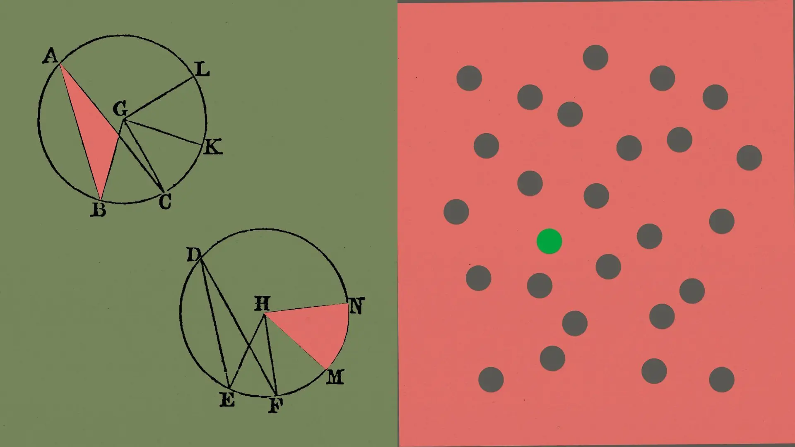
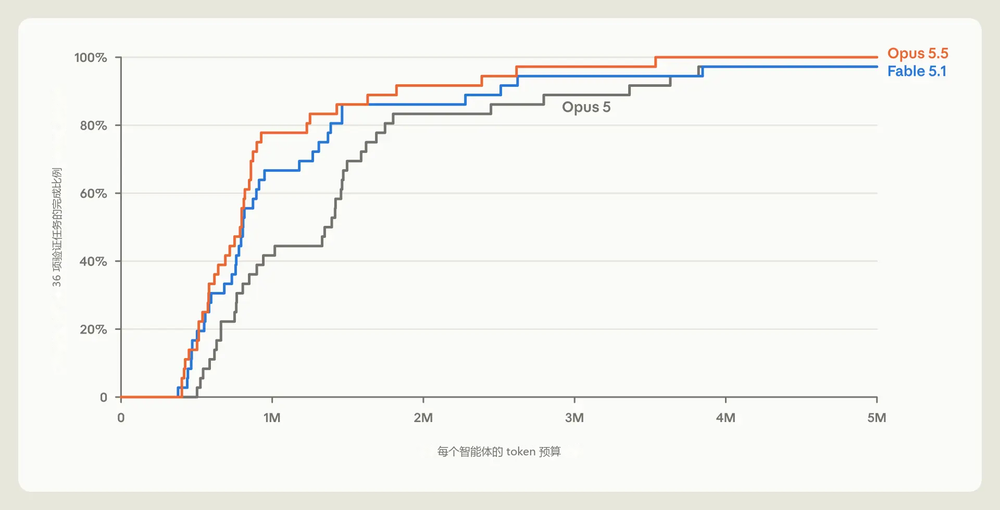
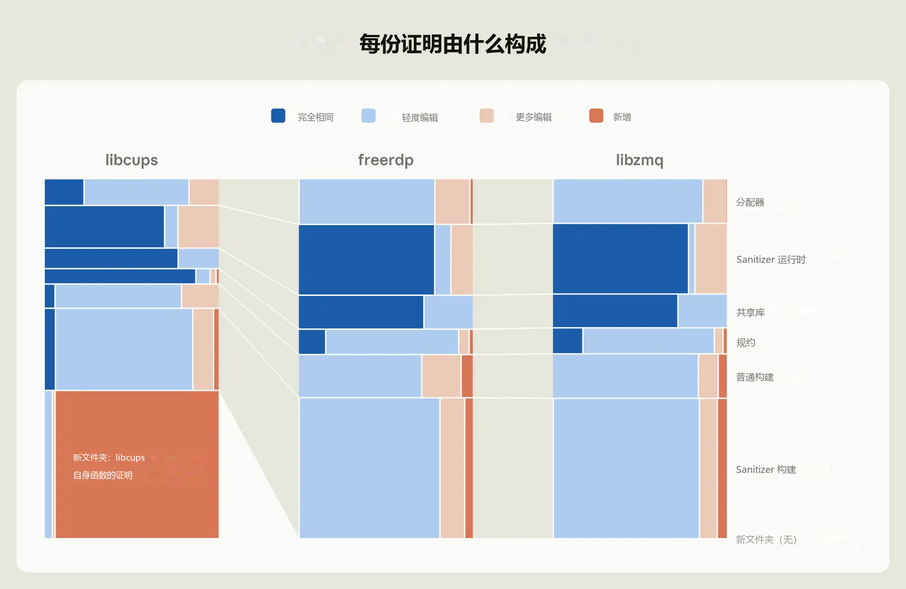
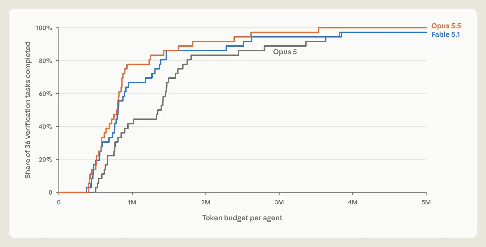
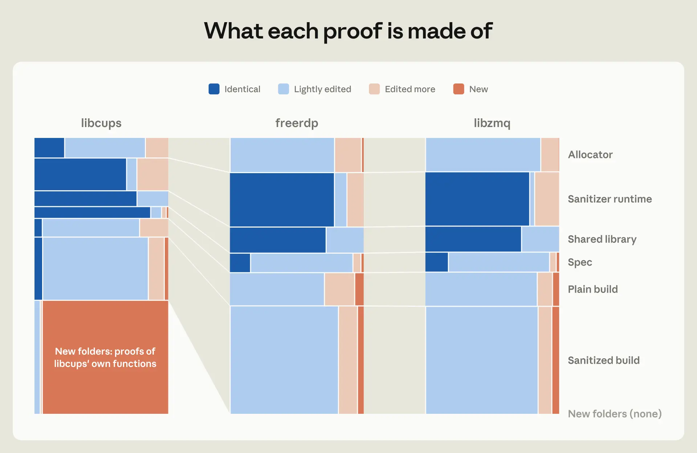

大语言模型正让更大规模的形式化软件验证变得可行
📖 中文摘要
专业术语注解
形式化验证：把代码转成数学模型并证明其始终遵循既定安全规则，从而保证无某类bug规约（specification）：形式化定义“正确”含义的陈述，本项目为任意输入下不崩溃Rocq：检查Claude所写证明是否满足规约的证明检查器（可信组件之一）模糊测试（fuzzing）：生成海量半随机输入找崩溃的暴力测试，无法保证覆盖所有路径RISC-V：一种开源指令集架构，本项目证明作用于其编译后的汇编/二进制📄 中文全文
- 类别： 前沿红队（Frontier Red Team）
- 来源： https://www.anthropic.com/research/formal-verification
前沿红队（Frontier Red Team） 2026 年 10 月 22 日

已发布 2026 年 10 月 22 日 团队 前沿红队 主题相关文章 * 前沿红队 2026 年 11 月 2 日 大语言模型可证明推理的研究进展
阅读更多
Keane Lucas, Aengus Lynch, Luna Tong, Luke Champine, Zygi Straznickas, Dino Distefano, Harshikaa Agrawal
Evyatar Ben Asher, Ava Howell, Sami Jawhar, Chris Rohlf, Nickolai Zeldovich
Nicholas Carlini, Rajashree Agrawal, Jason Gross
大多数软件都布满bug，如今AI已能轻松发现并利用它们。抵御网络攻击的标准防御手段已不再够用：我们需要能证明代码没有bug的方法。形式化软件验证本可提供这种保证，但历来需要专家投入数年精力，对大多数真实项目并不现实。然而，在与Theorem的合作中，我们证明情况已不再如此：大语言模型如今能够大规模产出形式化证明，从而催生带有可证明安全保证的新型软件开发工作流。借助Claude，我们在100多个真实开源软件库中，于汇编代码层面（RISC-V）证明了安全属性。据我们所知，这是首次大规模尝试用AI把形式化验证应用于汇编代码层面的生产软件。在撰写证明的过程中，Claude还发现了一些潜藏多年、即便经过数万亿次测试运行也未被检出的bug。随着模型能力持续提升，我们预期形式化验证将成为安全软件开发不可或缺的一环。
引言
即便是成熟、经过大量测试的软件也含有bug，而大语言模型在发现它们方面愈发娴熟。Linux内核——当今测试最充分的软件之一，部署在全球数十亿台设备上——近期被披露了1000多个漏洞。随着前沿模型越来越善于把看似无害的bug串联成严重利用程序，我们需要能在这些bug被现实利用之前就检测并修复它们的技术。 理想情况下，这类技术能找出并修补_所有bug_，再给出某种证明，表明已再无bug可寻。形式化验证（formal verification）便是实现这一点的一种方法。在形式化验证中，开发者把代码转译成数学模型，再尝试证明它始终遵循一组既定的安全规则。若证明失败，就意味着代码中可能存在违反某条规则的bug，而失败的性质也暗示了bug可能是什么。反复重复这一过程（每次消除失败成因之后），最终会得到一份证明，表明代码不含任何会违反那些规则的bug。 然而，形式化验证并不容易。证明可能比原始代码大许多倍，撰写证明需要投入大量精力，还需要小众且高度专业化的技能。举例来说，实现seL4操作系统内核用了两个人年，而对它做形式化验证却用了_20_个人年。因此，形式化验证过去只在真正关乎任务成败关键的应用中才可行，例如空客的航电代码。 但大语言模型正让它变得容易得多。前沿模型如今能完全自主地为真实软件产出正确性证明。为证明这一点，我们让Claude在123个开源库中证明有用的安全属性，包括表明其中某些可执行产物在特定条件下_永不_崩溃。具体而言，Claude证明：在某些假设下（即程序以固定内存预算、在采用Linux OS的RISC-V1 CPU上作为单线程静态二进制运行），对每一个小于64 MB的输入、每一种建模的Linux操作系统（OS）响应与内存布局，这些程序都会正常退出，不会触发内存安全错误或断言失败。这距离修复_所有_可能的bug仍很遥远，但确实让我们比以往接近得多，并给出了通往该目标的路线图。 我们正在公开这些证明的一个子集，让任何人都能验证和复用它们，同时公开的还有RISC-V与OS语义。本项目的合作方Theorem也在提出为其他开源项目运行同一套流程，并发布了一个Claude技能，帮助开发者着手验证自己的代码。 形式化验证是一个广阔领域，方法众多。下文我们还将介绍用其他形式化验证方法加速其他安全或软件开发任务的初步探索，例如评估zlib压缩算法的安全性、证明一个用Rust编写的Python解释器具有行为等价性，以及清除关键软件中盘踞已久的bug。 形式化验证的前路可期。随着模型变得更聪明，撰写证明的成本正在下降。此外，随着更多代码被形式化、达成安全保证的方法愈发标准化，跨代码库复用或修改证明的能力将摊薄成本。我们鼓励所有开发者用大语言模型探索形式化验证—— _尤其是_那些此前用能力较弱的模型尝试过、却发现行不通的人。 在本文余下部分，我们会更详细地介绍这些形式化验证实验。
把测试变成证明
要证明一段软件是正确的，我们必须先说明「正确」究竟指什么。正确性由_规约_（specification，简称spec）定义。对某些程序而言，存在清晰的方式来形式化描述其预期行为。例如，一个PNG解码器接收一串字节，并（遵循RFC 2083）把这些字节解码成对应的图像。但对大多数程序来说，事情没这么直截了当。一个文本编辑器或网页浏览器「正确」又意味着什么？难以得到一份全面且无歧义的规约，是在更大规模上验证软件的一大障碍。 为解决我们试图证明的那些开源库代码的这一问题，我们采用的做法是：借助一个通用模型来刻画「在Linux上执行任意RISC-V编译的二进制文件」意味着什么，把「这套测试始终通过」这条规则编码进去，从而把它们既有的可编译测试套件自动转换为规约。历史上，证明这类规约难以实现，因为要写出一份能涵盖并论证数万条汇编指令在任意输入下所有可能行为与交互的证明，本身极其复杂（而且证明往往也因此变得极为庞大）。这正是当今大语言模型的用武之地：为追求一个定义明确的目标而啃下数百万行代码，是大语言模型极为擅长的任务。 在这个项目中，我们从_模糊测试_（fuzz tests）入手。在这类测试中，开发者在代码里写一个接收输入的_入口点_2，任何导致崩溃的输入都是作者关心的bug。随后，模糊测试器（fuzzer）这个测试引擎会在该入口点生成海量半随机、经过变异的输入，试图找出bug（见图1）。模糊测试器运行得越久，能找到的bug就越多。但这本质上是一种暴力过程，无论尝试多少输入，都无法保证覆盖每一条可能的代码路径。 模糊测试的做法是让海量生成的输入通过同一个入口点，以找出导致崩溃的输入。输入是无穷的，因此搜索永远无法穷尽。 为了找出模糊测试本会暴露的所有bug，我们把模糊测试转成一份定义在编译后的RISC-V指令之上的规约。该规约声明：对_任意_小于64 MB的输入，模糊测试都不会崩溃。3如果Claude能证明这份规约，RISC-V上的模糊测试就变得多余：对该入口点做模糊测试将永远找不到任何bug。 我们对Google OSS-Fuzz计划中的数百个项目这样做了，该计划为符合条件的开源项目提供持续的模糊测试。OSS-Fuzz包含数千个由开发者撰写的入口点，它们通过崩溃（例如断言失败）来查找被破坏的代码属性。OSS-Fuzz会自动用AddressSanitizer4（ASan）插桩C和C++程序，使其一旦发生不当内存访问就崩溃（而不当内存访问正是软件漏洞的主要成因）。像内存安全这类宽谱规约几乎适用于所有软件。 开源库及其既有的模糊测试被编译成一个RISC-V可执行文件。该可执行文件连同Theorem的RISC-V与OS形式化语义、以及期望的「不崩溃」属性，机械地生成一份证明必须满足的规约。Claude撰写证明；Rocq内核对照该规约检查证明。绿色标记的是已被证明的部分，前提是可信组件本身正确无误。 在数周时间里，Claude成功修补了它发现的bug，随后证明123个不同OSS-Fuzz库中239个入口点在任何输入（不超过64 MB）下都不会崩溃。这些证明作用于编译后的RISC-V指令（即可执行二进制文件），合计约1.8亿行Rocq代码，其中一份典型证明约60万行，用来为长度中位数为18,000条RISC-V指令的二进制文件提供安全保证。这些证明的构建方式，是用Theorem的RISC-V指令与Linux进程语义把RISC-V汇编代码转译成数学模型。这意味着这些证明目前假定程序以固定内存预算、在采用Linux OS的RISC-V CPU上作为单线程静态二进制运行。扩大这些证明的适用范围完全触手可及，因为这只需为更多汇编架构和其他操作系统进程标准化语义。关于Claude所写证明，参见一位专家的评述。 覆盖所有输入的形式化「不崩溃」证明，排除了从入口点可达的任意路径上的所有崩溃。在迭代证明的过程中，Claude还能找出并修复任何残余的、可达的致崩溃bug。 尽管证明代码体量庞大，但几乎没有任何一部分需要人工审阅。Rocq证明检查器会确保证明正确满足规约。因此，开发者需要信任的产物仅有： * RISC-V与Linux进程的形式化模型； * 被证明的精确定理陈述； * Rocq证明检查器本身。5
这并不意味着这些库不含bug。它意味着的是：任何残余bug要么藏在上述产物之中，要么落在Claude证明的范围之外。加固那些仍可能含bug的可信组件（Rocq、RISC-V与Linux语义）并非小事，但相比逐行调试规模化证明所覆盖的每一处代码，它是一个容易得多的任务——尤其因为这种方法能保护任意数量的项目，却不会增大可信组件的规模。 我们欢迎对我们的证明做独立验证，也鼓励改进我们的方法。为此，我们正在公开为本项目制作、尚未公开的可信组件（见上）；Claude为无需修补的模糊测试所写的完整Rocq证明；以及我们未能证明的其他模糊测试的规约。
发现并修复bug
上文我们说明，可以把许多开源库由开发者撰写的测试（模糊测试）转成Claude能证明其始终通过的规约——有时是在修补它发现的残余bug之后。正因如此，尝试证明这些规约的过程发现了数百个bug。 Claude在尝试证明数百个入口点时冒出了大量bug。为免Claude每次遇到这种情况都要停下来等人，我们让它自行修复发现的bug：它修补代码，于是规约会用修补后的代码重新生成，随后Claude继续去证明那份新规约。6 我们发现的许多bug，是模糊测试器几乎永远找不到的。模糊测试器变异的是小输入，通常上限为1 MB，而且通常依靠代码覆盖率把自己引向bug。在证明某个库的一个入口点时，Claude在其内置的解压缩器副本里发现了一处计数器下溢，会导致越界写，但仅在约20 MB、且具备一种罕见特定布局的输入上才会触发。其他bug还包括：一个图像解码器中的越界读，需要64 MB输入和超过2 GB内存；另一个库中的越界读，需要对同一文件的两个句柄做特定顺序的调用；以及重新发现了libexpat中的CVE-2026-56132，它需要深度嵌套的输入。Claude还发现了一些根本不会导致崩溃的逻辑bug。例如，在证明某个库内存安全时，它注意到一项用于限制应用可加载哪些文件的功能并非总被强制执行。 这个项目的最终目标，是拿到一份证明，表明RISC-V编译的模糊测试已无残余崩溃可寻。然而，上述这类bug说明，无论该目标是否达成，这个过程还有另一重收益：哪怕只是尝试这个过程，也会产出需要修复的真实bug。
证明的不止内存安全
证明模糊测试已无崩溃可寻，其意义比听上去更大。真实代码中的模糊测试常常会检验有意义的高层属性是否遭违背，例如编解码往返、幂等性、代数律、差分测试、自洽性，或与参考实现等价。举例来说，LZO压缩算法的一个模糊测试断言：若把一个输入压缩后再解压，结果与原始输入相同。若该属性不成立，程序就崩溃——因此证明测试永不崩溃，等价于证明该属性本身成立。 即便这些属性并非由开发者直接指定，这种情况也可能出现。例如，为了让Claude完成对cpp-httplib的OSS-Fuzz证明，必须排除std::set析构函数中因递归过深导致栈溢出的可能。这一递归深度受树的最大深度约束，因此Claude不得不证明（在机器码层面！）libc++的红黑树重平衡算法被正确优化，能把树深保持在对数量级的上界之内。
其他形式化验证案例研究
形式化验证是个广阔的领域。上文的「模糊测试转证明」例子，只是大语言模型通过把证明直接应用于机器码、让形式化验证更易普及的一个实例。 我们也看到把大语言模型以其他方式用于形式化验证取得成功。例如，我们让Claude为RFC 1950撰写一份形式化规约——这份技术文档定义了zlib压缩文件格式。随后，我们让Claude证明Linux内核中的zlib实现正确实现了该规约。与上述例子一样，Claude在二进制层面证明了这一属性，只不过它证明的不是RISC-V，而是借助由Claude生成（并经大量测试）的x86 ISA形式化语义，直接证明x86编译的二进制文件。7之后我们又对另外六个广泛使用的库重复了这一过程。沿途我们在边角情形中发现了一些轻微的（不可利用的）bug，目前正在向上游提交。我们从这项工作中得出两点结论：（1）这些经过极度充分测试的代码库几乎已完全正确；（2）对真实存在的代码库证明端到端的正确性属性是可行的。 在另一项实验中，我们让Claude用Rust开发一个覆盖Python很大一个子集的解释器，并（借助Rust的验证工具Verus）证明它遵循一篇学术论文所勾勒的CPython语义。随后我们实测了它对CPython行为的贴合程度：运行超过170万个随机生成的Python程序，发现99.95%的测试中行为与CPython完全一致，余下的测试差异都是不出所料的已知边角情形。 我们还通过对简单安全属性做形式化验证的尝试，在若干广泛使用且关键的应用中发现了问题。在其中之一，我们发现了一个此前未知、已潜伏十余年的逻辑bug。在验证一款广泛使用的PDF阅读器时，我们一周内发现的安全bug数量，相当于通常一整年报告的数量。 关于其中部分工作的更多细节，参见附录。
这仅仅是个开始
大语言模型辅助形式化验证的一个关键局限，在于撰写证明可能要耗费数亿token。若我们的目标是让这些方法惠及整个软件生态，成本效率就至关重要。所幸，有充分理由预期效率会提升。
更新的模型需要更少的token
我们用真实OSS-Fuzz代码构建了36个小规模验证任务。Opus 5.5能证明其中一半，所用token比Opus 5少约40%。我们预期，随着模型在长验证任务上接受训练，这一趋势会延续。

Opus 5.5比早期模型更快完成证明。在给定token预算下由单个智能体证明的36项形式化验证任务占比。每项任务在5M token预算下接受三次独立的单智能体尝试，以首次尝试完成即计为已证明。证明可以复用
当各个智能体分开工作时，它们最终常会重复大量劳动。证明和软件一样，是由更小的证明递归构建而成——而证明越小，往往越容易复用。为衡量这一影响，我们让智能体在证明各自目标时可以互相复制彼此的证明。获得这一共享工作区后，智能体所需token比各自单独工作时少17%，有些智能体甚至在先前单独尝试失败之后取得了成功。 来自同一共享工作区的36份证明，按完成顺序排列。弧线连接共享同一未改动文件的任意两份证明；柱条显示撰写每份证明所耗token，黑线显示同一任务由单独工作的智能体承担时的平均成本——在34份已完成的证明中，有30份该成本更高（单独工作的智能体未能完成其中两份证明）。 在我们的OSS-Fuzz证明工作中，同样观察到这一现象在规模化层面发生。一份证明的大部分内容关乎每个程序都包含的代码（尤其是C运行时与AddressSanitizer的初始化），因此差异极大的程序最终可能拥有高度重叠的证明。智能体团队利用了这一点：复制另一团队已完成的证明，再把它改造成适用于自己程序的版本（图6）。

智能体复制现有证明，并把它改造成适用于每个新程序的版本。每一列代表一个程序的完整证明，按字节占比显示。色块是证明的各个组成部分，每个色块显示其中有多少被保持原样、轻度编辑（同一文件，大小变化在2%以内）、较大改动或全新撰写。共享部分几乎没有新增代码。 正是证明的这种可复用性，让Mathlib——Lean中一个共享的形式化数学库——成长为由700多位贡献者提交的近30万条定理：每一份新证明都建立在既有的成果之上。在OSS-Fuzz工作过程中，我们也积累了类似的证明体系，其中一部分会纳入此次发布（我们不会发布那些可能暴露开源软件中未修补bug的证明）。 当我们从这些初步实验走向成熟时，需要一套策略来验证体量庞大的_既有_软件，从最关键的依赖项开始。正如我们所展示的，这可以通过使用通用规约、在二进制层面工作来规模化实现，从而绕开用另一种语言重写整个代码库的需要。 这种方法还便于在包粒度上复用证明，意味着每个依赖项只需验证一次。依赖遵循幂律：哪怕只证明一小批共享库，就能让大片软件变得可证明。更多细节参见Theorem的路线图，它计划验证整个Nix生态，其中包括glibc、OpenSSL和cURL等关键基础设施。局限
在实践中，形式化验证对代码安全性所能证明的东西，有时比我们希望的更少。 「经过形式化验证」不等于「没有bug」。Claude能写出一份证明，表明已编译程序的行为满足形式化规约的要求（由外部证明检查器核验）。然而，证明检查器无法告诉你规约是否与现实相符。要与现实相符，规约必须正确涵盖并建模被验证程序所运行的真实机器的一切，包括CPU和操作系统。当经过验证的代码里出现bug时，原因正是规约、或所假定的机器语义与现实存在偏差。所幸，这也意味着我们知道该_到哪里_去找残余bug，也知道如何设计一个把这些仍可能含bug的缝隙压到最小的系统。下文说明这一点如何适用于我们的证明，以及未来可弥合这些缝隙的工作思路。 真实机器会做模型没有描述的事。我们的证明针对的是链接musl libc的单线程静态RISC-V二进制文件。然而，大多数人是在x86或ARM上运行这些库，并把它们动态链接到glibc。要弥合这一缝隙，我们需要更贴近实际部署系统的系统模型。例如，朝这个方向迈出的一步，是为x86生成精确的语义。 结论可能没覆盖我们关心的一切。我们证明的是：在Google OSS-Fuzz的许多模糊测试入口点上，对任何小于64 MB的输入都不会触发崩溃，包括ASan崩溃。然而，ASan并不能检测所有内存安全bug，我们也并未验证每个库的全部入口点。即便验证了，验证所有入口点也不等于覆盖整个库（尤其当存在死代码时）。此外，真实程序可能误用该库，导致_调用方_出现内存破坏。要弥合这一缝隙，我们需要为每个公开函数规定调用方必须遵守的约定，而调用方也必须严格照办。 我们预期，随着我们对借助大语言模型做形式化方法了解得更多、模型也持续进步，这些局限将变得可处理，我们也将能验证我们所依赖代码中大得多的比例。
结论
轨迹已经清晰：形式化验证历来只在最讲安全的关键代码里、以专家量身定制的保证形式才可行，而它很快就会像今天的模糊测试一样，对几乎所有生产软件都切实可用。正如静态类型、测试框架和其他正确性工具一样，验证将从「外挂」走向「内建」，其驱动力不仅来自大语言模型，也来自语言设计与开发工作流的创新。 在当今世界——大语言模型会自动扫描并找出越来越多的代码漏洞——我们必须采用能够_保证_代码安全属性的流程。以大语言模型规模化开展的形式化验证，是一条有希望的道路，能以前所未及的范围与规模落实这些保证。我们鼓励其他人也来尝试，以便共同建成这样一个世界：健壮的软件广泛普及，而软件bug成为被充分理解、能迅速处理的稀有之物。 阅读完整附录。
脚注
01RISC-V是一种处理器设计，与x86或ARM类似，它定义了软件被编译成的汇编指令（芯片执行的基本命令）。 02入口点是代码的一道「正门」，由其作者为测试而提供。任何进入入口点并导致崩溃的输入，都是作者关心的bug。 03要提高这个上限，只需人做极少的工作：改动该参数、重新生成规约，再让Claude重新证明该命题。 04AddressSanitizer是一种编译器工具，它给程序加入检查，使缓冲区溢出、释放后使用等内存错误在运行时一发生就被检测并报告。 05严格说来，这也意味着我们必须信任Rocq证明检查器所依赖的硬件、操作系统和OCaml编译器。 06请注意，这给奖励作弊（reward hacking）留了口子。奖励作弊指AI模型找到一条捷径，技术上满足了交给它的目标，却没做真正打算让它做的事，就像学生靠背答案而非学知识来通过考试。在这里，Claude本可以把程序重写成一个平凡地永不崩溃的版本，从而让任何定理都可证明。为抑制这一点，我们对任何修补都施加惩罚，并对「证明它改动了哪些输入、改动有多么少」给予额外加分。我们还记录并审计了这些修补，以排查此类失效模式。 07我们认为，Claude能够——完全自主地——生成一套ISA的形式化语义，本身就是另一条有意思的启示。虽然我们无法确定自己这套语义是否完美，但实测发现，按我们的语义单步执行，能在Linux内核之上启动一个Ubuntu用户空间。生成这些语义的过程，还找出了官方参考文档中的数百处错误，以及硬件本身数量更少的若干bug。
▸ 英文原文（点击展开）
LLMs are making formal software verification feasible at a much larger scale
- Date: 2026-10-22
- Source: https://www.anthropic.com/research/formal-verification
LLMs are making formal software verification feasible at a much larger scale
Published Oct 22, 2026 Team Frontier Red Team Topics
Related articles * Frontier Red Team Nov 2, 2026 Progress on provable inference for large language models
View more
Keane Lucas, Aengus Lynch, Luna Tong, Luke Champine, Zygi Straznickas, Dino Distefano, Harshikaa Agrawal
Evyatar Ben Asher, Ava Howell, Sami Jawhar, Chris Rohlf, Nickolai Zeldovich
Nicholas Carlini, Rajashree Agrawal, Jason Gross
Most software is riddled with bugs, which AI can now easilyfind and exploit. The standard defenses against cyberattacks are no longer sufficient: we need ways to prove that code is free of bugs. Formal software verification could provide this guarantee, but it has historically required years of expert effort, making it impractical for most real-world projects. In a collaboration with Theorem, however, we show this is no longer the case: LLMs can now produce formal proofs at large scale, enabling new software development workflows that include proven security guarantees. Using Claude, we proved security properties at the assembly code level (RISC-V) in over 100 real-world open-source software libraries. To our knowledge, this represents the first large-scale effort to use AI to apply formal verification to production software at the assembly code level. While writing the proofs, Claude also discovered bugs that had eluded detection for years, despite trillions of test runs. As model capabilities continue to improve, we expect formal verification to become an essential part of secure software development.
Introduction
Even mature, heavily tested software contains bugs, and LLMs are increasingly adept at finding them. The Linux kernel—one of the most well-tested pieces of software today, deployed on billions of devices worldwide—recently had over 1,000 vulnerabilities disclosed. With frontier models becoming more capable of chaining seemingly benign bugs into critical exploits, we need techniques that can detect and fix these bugs before they can be exploited in the wild. Ideally, such techniques could find and patch all bugs, and then provide some proof that there are no more to be found. Formal verification is one way to do this. In formal verification, developers translate their code into a mathematical model, then try to prove that it always follows some defined set of security rules. If they fail to prove this, that means there could be a bug in the code that would violate a rule, and the nature of the failure implies what the bug might be. Repeating this process (after eliminating the cause of failure each time) will ultimately yield proof that the code is devoid of any bug that would violate those rules. However, formal verification isn’t easy. Proofs can be many times larger than the original code, and writing them requires significant effort and a niche, highly specialized skill set. For instance, it took two person-years to implement the seL4 operating system kernel, but 20 person-years to formally verify it. Accordingly, formal verification has been practical only in truly mission-critical applications, such as Airbus’s avionics code. But LLMs are making it far easier. Frontier models can now produce correctness proofs for real-world software fully autonomously. To demonstrate this, we asked Claude to prove useful security properties across 123 open-source libraries, including showing that some of their executable artifacts can never crash under certain conditions. Specifically, Claude proved that these programs will always exit normally without triggering memory-safety errors or failing assertions, for every input less than 64 MB and every modeled Linux operating system (OS) response and memory layout, under certain assumptions (namely that the program runs as a single-threaded static binary with a fixed memory budget on a RISC-V1 CPU using Linux OS). This is still far away from fixing all possible bugs, but it does get us much closer than before and provides a roadmap toward that end. We’re publishing a subset of these proofs so that anyone can verify and reuse them, along with the RISC-V and OS semantics. Theorem, our collaborator on this project, is also offering to run the same pipeline for other open-source projects, and is publishing a Claude skill to help developers get started with verifying their own code. Formal verification is a broad field with many methodologies. Below, we also describe our initial explorations using other formal verification methods to accelerate other security or software development tasks, such as assessing the security of the zlib compression algorithm, proving behavioral equivalence of a Python interpreter written in Rust, and rooting out long-standing bugs in critical software. The road ahead for formal verification is promising. The cost of writing proofs is falling as models become more intelligent. Moreover, as more code is formalized and methods of achieving security guarantees become more standardized, the ability to reuse or modify proofs across codebases will amortize the cost. We encourage all developers to explore formal verification with LLMs— especially those who previously tried it with less capable models and found it didn’t work. In the rest of this post, we cover our formal verification experiments in more detail.
Turning tests into proofs
To prove that a piece of software is correct, we must first state what “correct” even means. Correctness is defined by the specification (spec). In some programs, there is a clear way to formally specify the program’s intended behavior. For example, a PNG decoder takes a sequence of bytes and (following RFC 2083) decodes these bytes into the corresponding image. But for most programs, things aren’t so straightforward. What would it mean for a text editor or a web browser to be “correct”? The difficulty of obtaining a comprehensive and unambiguous spec is a significant obstacle to verifying software at a larger scale. To address this for the code in the open-source libraries that we sought to prove, we take the approach of automatically converting their preexisting compilable test suites into a spec by encoding the rule “this test suite always passes,” using a general model of what it means to execute any RISC-V-compiled binary on Linux. Historically, proving such specs was intractable, given the inherent complexity of writing a proof that can encompass and make an argument over all possible behaviors and interactions of tens of thousands of assembly instructions over any input (and the fact that proofs tend to be extremely large as a result). This is where today’s LLMs come in: churning through millions of lines of code in pursuit of a well-defined goal is a task that LLMs are extremely well suited for. For this project, we started with fuzz tests. In these tests, developers write an entry point_2 into their code that takes inputs, such that any input that causes a crash is a bug the authors care about. Then the _fuzzer, a testing engine, generates enormous numbers of semirandom and mutated inputs at the entry point to try to find a bug (visualized in Figure 1). The longer a fuzzer runs, the more bugs it can find. But this is inherently a brute-force process, with no guarantee of exercising every possible code path, regardless of how many inputs you try. Fuzzing works by running huge numbers of generated inputs through one entry point to find the inputs that cause a crash. There are infinite inputs, so the search can never be complete. To find all the bugs that would’ve been surfaced by a fuzz test, we turned the fuzz test into a spec defined over the compiled RISC-V instructions. The spec says that the fuzz test won’t crash for any input less than 64 MB.3 If Claude can prove this spec, the fuzz test on RISC-V becomes superfluous: fuzzing that entry point will never find any bugs. We did this for hundreds of projects in Google’s OSS-Fuzz initiative, which provides continuous fuzz testing for qualifying open-source projects. OSS-Fuzz contains thousands of developer-authored entry points that look for broken code properties by crashing (for example, on a failed assertion). OSS-Fuzz automatically instruments C and C++ programs with AddressSanitizer4 (ASan), causing them to crash whenever memory is accessed improperly (which is a leading cause of software vulnerabilities). Broad-spectrum specifications like memory safety apply to almost all software. The open-source library and its existing fuzz test are compiled to a RISC-V executable. This executable, along with Theorem’s RISC-V and OS formal semantics and the desired no-crash property, mechanically yield a specification the proof must satisfy. Claude writes the proof; the Rocq kernel checks it against the specification. Green marks what’s proven, conditional on the trusted components being correct. Over the span of a few weeks, Claude successfully patched the bugs it found and then proved that there are no crashes on any input (up to 64 MB) for 239 entry points across 123 different OSS-Fuzz libraries. These proofs operate on the compiled RISC-V instructions (i.e., executable binaries), and they comprise about 180 million lines of Rocq, with a typical proof running to about 600,000 lines to provide security guarantees on binaries with a median length of 18,000 RISC-V instructions. These proofs are built by translating the RISC-V assembly code to a mathematical model using Theorem’s RISC-V instruction and Linux process semantics. This means these proofs currently assume that the program runs as a single-threaded static binary with a fixed memory budget on a RISC-V CPU using Linux OS. Expanding the scope of these proofs is well within reach, as it would involve standardizing semantics for more assembly architectures and other operating system processes. See an expert’s take on the proofs Claude wrote. A formal no-crash proof over all inputs rules out all crashes along any path reachable from the entry point. While iterating on its proof, Claude can also find and fix any remaining reachable crash-producing bug. While this is an enormous volume of proof code, virtually none of it needs to be manually reviewed. The Rocq proof checker ensures that the spec is correctly satisfied by the proof. As a result, the only artifacts that a developer needs to trust are: * The formal models of RISC-V and of Linux processes; * The exact theorem statements that were proved; * The Rocq proof checker itself.5
This doesn’t mean these libraries contain no bugs. Instead, it means that any remaining bugs either are to be found within the artifacts listed above or are outside the scope of Claude’s proof. Hardening those still-possibly-buggy trusted components (Rocq, RISC-V, and Linux semantics) is not insignificant, but it’s a far more tractable task than debugging every line of code the scaled-out proofs cover—especially as this approach can secure an arbitrary number of projects without increasing the size of the trusted components. We welcome independent verification of our proofs and encourage refinement of our approach. To that end, we are publishing the trusted components (above) made for this project that are not already public; Claude’s complete Rocq proofs for fuzz tests that did not require patching; and specifications for other fuzz tests we were not able to prove.
Finding and fixing bugs
Above, we showed that you can turn many open-source libraries’ developer-written tests (fuzz tests) into specs that Claude can prove will always pass, sometimes after patching the remaining bugs it found. For this reason, the process of attempting to prove these specs discovered hundreds of bugs. Lots of bugs showed up during Claude’s attempts to prove hundreds of entry points. To ensure that Claude didn’t have to stop for a human every time this happened, we let Claude fix the bugs it found: it patched the code, which caused the spec to be regenerated with that patched code, and then Claude proceeded to prove that new spec.6 Many of the bugs we found are ones that a fuzzer would be unlikely to ever find. Fuzzers mutate small inputs, typically capped at 1 MB, and typically rely on code coverage to guide them toward bugs. While proving an entry point in one library, Claude found a counter underflow in its copy of a decompressor that led to an out-of-bounds write, but only on inputs of around 20 MB that had one rare, specific layout. Other bugs include an out-of-bounds read in an image decoder that needed a 64 MB input and over 2 GB of memory, an out-of-bounds read in another library that needed a particular sequence of calls across two handles to the same file, and a rediscovery of CVE-2026-56132 in libexpat, which needed deeply nested input. Claude also found logic bugs that never crash at all. While proving that one library was memory-safe, for example, it noticed that a feature for restricting which files an application can load isn’t always enforced. The ultimate goal of this project was to achieve a proof that the RISC-V-compiled fuzz tests had no remaining crashes to find. However, bugs like the above show that the process has another benefit, regardless of whether that goal is achieved: even just attempting this process yields real bugs that need to be fixed.
Proving more than memory safety
Proving that a fuzz test has no more crashes to find is more significant than it sounds. It’s common for fuzz tests in real-world code to test for violations of meaningful high-level properties, such as encode-decode roundtripping, idempotence, algebraic laws, differential testing, self-consistency, or equivalence to reference implementations. For example, a fuzz test for the LZO compression algorithm asserts that if you compress an input, then decompress it, the result is the same as the original. If the property does not hold, the program crashes—so proving the test never crashes is equivalent to proving the property itself. This can also occur even when the properties are not directly specified by the developer. For example, in order for Claude to complete its OSS-Fuzz proof for cpp-httplib, it was necessary to rule out the possibility of a stack overflow due to too much recursion in the std::set destructor. This recursion depth is bounded by the maximum depth of a tree, so Claude had to prove (on machine code!) that libc++’s red-black tree rebalancing algorithm is correctly optimized to keep the tree’s depth logarithmically bounded.
Other formal verification case studies
Formal verification is an expansive domain. The fuzz-test-to-proof example above is one instance of LLMs making formal verification more widely usable by directly applying proofs to machine code. We’ve also seen success using LLMs with formal verification in other ways. For example, we asked Claude to write a formal spec of RFC 1950, the technical document that defines the zlib compression file format. Then, we had Claude prove that the zlib implementation in the Linux kernel correctly implements that spec. As with the examples above, Claude proved this property at the binary level, except instead of RISC-V, Claude directly proved the x86-compiled binary using Claude-generated (and heavily tested) formal semantics of the x86 ISA.7 We then repeated this process for half a dozen other widely used libraries. Along the way, we found some minor (unexploitable) bugs in corner cases, which are in the process of being filed upstream. We draw two conclusions from this exercise: (1) these extremely well-tested codebases are already almost fully correct, and (2) it is possible to prove end-to-end correctness properties about real existing codebases. In another experiment, we asked Claude to develop an interpreter for a large subset of Python in Rust, and to prove (using Verus, a verification tool for Rust) that it adheres to the CPython semantics outlined in an academic paper. We then measured the adherence to CPython’s behavior empirically, running over 1.7 million randomly generated Python programs, finding identical behavior with CPython in 99.95% of tests, with remaining test differences as unsurprising known corner cases. We also found issues in several widely used and critical applications via formal verification attempts of simple security properties. In one of them, we discovered a previously unknown logic bug that had been latent for more than a decade. During an effort to verify a widely used PDF reader, we found as many security bugs in one week as are typically reported in a year. See the Appendix for more details on some of these efforts.
This is just the beginning
One of the key limitations of LLM-assisted formal verification is that the proofs can take hundreds of millions of tokens to produce. Cost-efficiency is critical if our goal is to make these methods available to the entire software ecosystem. Fortunately, there are compelling reasons to expect efficiency to improve.
Newer models need fewer tokens
We built 36 small verification tasks from real OSS-Fuzz code. Opus 5.5 proves half of them with about 40% fewer tokens than Opus 5. We expect this trend to continue as models are trained on long verification tasks.

Opus 5.5 finishes proofs faster than earlier models. Share of 36 formal verification tasks proved by a single agent at a given token budget. Each task received three independent single-agent attempts at a 5M-token budget, and counts as proven when the first attempt finishes.Proofs can be reused
When agents work separately, they often end up duplicating a lot of effort. Proofs, like software, are recursively built from smaller proofs—and the smaller the proofs are, the more reusable they tend to be. To measure the impact of this, we let agents copy each other’s proofs as they worked on proving their own targets. When given access to this shared workspace, agents needed 17% fewer tokens than when they worked alone, and some agents even succeeded after previously failing in a solo attempt.
The 36 proofs from one shared workspace, in the order they finished. An arc joins any two proofs that share an unchanged file; bars show the tokens spent writing each proof, and black lines show the same task’s average cost for an agent working alone, which was higher in 30 of the 34 completed proofs (agents working alone were not able to complete two of the proofs).
We observed the same phenomenon occurring at scale during our OSS-Fuzz proof effort. Most of a proof concerns code that every program contains (particularly initialization of the C runtime and AddressSanitizer), so very different programs can end up with significantly overlapping proofs. Agent teams took advantage of this by copying another team’s finished proof and then adapting it to their own program (Figure 6).

Agents copied an existing proof and adapted it to each new program. Each column represents one program’s complete proof by share of bytes. Blocks are the parts of the proof and each block shows how much was kept identical, lightly edited (same file, size within 2%), edited more, or newly written. The shared parts gained almost no new code. This reusability of proofs is how Mathlib, a shared library of formal mathematics in Lean, grew to nearly 300,000 theorems submitted by over 700 contributors: each new proof builds on the existing body of work. We accumulated a similar body of proofs in the course of our OSS-Fuzz effort, some of which we’re including in our release (we are not releasing proofs that may reveal an unpatched bug in the open-source software). As we graduate from these initial experiments, we need a strategy for verifying the enormous body of existing software, starting with the most critical dependencies. As we’ve shown, this can be achieved at scale by using generic specs and working at the binary level, sidestepping the need to rewrite entire codebases in another language. This approach also facilitates the reuse of proofs at package-level granularity, which means that each dependency only needs to be verified once. Dependencies follow a power law: proving even a small set of shared libraries makes a huge swath of software feasible to prove. For more details, see Theorem’s roadmap for verifying the entirety of the Nix ecosystem, which includes critical infrastructure like glibc, OpenSSL, and cURL.Limitations
In practice, formal verification can sometimes prove less about the security of the code than we would like. “Formally verified” does not mean “bug-free.” Claude can write a proof showing that a compiled program’s behavior satisfies the requirements of a formal spec (which is verified by an external proof checker). However, a proof checker can’t tell you whether your spec matches reality. To match reality, the spec must correctly encompass and model everything about the real-world machine that the verified program runs on, including the CPU and operating system. When bugs show up in verified code, it’s because the spec, or the assumed semantics of the machine, differs from reality. Fortunately, this also means we know where to look for remaining bugs, and how to design a system where those still-possibly-buggy gaps are minimized. Below are the ways this applies to our proofs, and ideas for future work that would close those gaps. The real machine does something the model doesn’t describe. Our proofs are about single-threaded, static RISC-V binaries linked against musl libc. However, most people run these libraries on x86 or ARM and dynamically link them against glibc. To close this gap, we’d need system models that more closely resemble deployed systems. For example, a step toward this would be generating accurate semantics for x86. The claim may not cover everything we care about. We proved that a crash never triggers for any input under 64 MB on many fuzzing entry points in Google OSS-Fuzz, including ASan crashes. However, ASan doesn’t detect all memory safety bugs, and we didn’t verify all the entry points for each library. Even if we had, the whole library wouldn’t be covered by verifying all entry points (especially if there is dead code). Additionally, real programs might misuse the library, leading to memory corruption in the caller. To close that gap, we’d need to specify what callers must do for each public function, and callers would have to strictly adhere to it. We expect that as we learn more about leveraging LLMs for formal methods, and as models continue to improve, these limitations will become tractable, and we’ll be able to verify a much larger percentage of the code we rely upon.
Conclusion
The trajectory is clear: formal verification, which was historically practical only for bespoke expert-crafted guarantees in the most safety-critical code, will soon be as practical as fuzzing is today for almost all production software. Just like static types, testing frameworks, and other correctness tooling, verification will mature from “bolted-on” to “built-in,” driven not only by LLMs but also by innovations in language design and development workflows. In today’s world—where LLMs automatically scan for and find increasingly more code vulnerabilities—we must use processes that can guarantee code security properties. LLM-scaled formal verification is a promising approach toward securing these guarantees at a scope and scale that were previously unattainable. We encourage others to experiment so we can collectively build a world in which robust software has proliferated very widely and software bugs are a well-understood and quickly addressable rarity. Read the full appendix.
Footnotes
01RISC-V is a processor design, like x86 or ARM, that defines the assembly instructions (the basic commands a chip carries out) that software is compiled into. 02An entry point is a front door into the code, provided by its authors for testing. Any input to the entry point that causes a crash is a bug the authors care about. 03Increasing this requires trivial human effort to change the parameter and regenerate the spec, then have Claude reprove the statement. 04AddressSanitizer is a compiler tool that adds checks to a program so that memory errors, such as buffer overflows and use-after-free, are detected and reported the moment they occur at runtime. 05This technically also means we have to trust the hardware, OS, OCaml compiler that the Rocq proof checker relies on. 06Note this leaves open the door to reward hacking. Reward hacking is when an AI model finds a shortcut that technically meets the goal it was given without doing what was actually intended, like a student who passes an exam by memorizing the answer key instead of learning the material. In this context, Claude could make any theorem provable by rewriting the program into one that trivially never crashes. To discourage this, we penalized any patch and offered extra credit for proving which inputs it changes and how few they are. We also logged and audited the patches for these failure modes. 07We think that the ability of Claude to—entirely autonomously—generate the formal semantics of an ISA is a separate interesting lesson. While we can not be sure our semantics themselves are perfect, empirically we have found that single-stepping through our semantics can boot an Ubuntu userspace on top of a Linux kernel. Generating these semantics also identified hundreds of mistakes in the official reference documentation, along with a smaller number of bugs in the hardware itself.